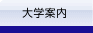
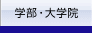
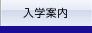
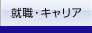
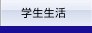
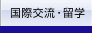
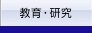
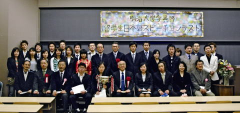
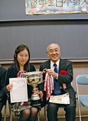

千 代田区との連携
杉 並区との連携
川 崎市との連携
成 田社会人大学
飯 田産業技術大学
調 布市との連携
秋 葉原クロスフィールド
エ ドバレー
三 鷹ネットワーク大学
キャ ンパス・ハラスメントとは？
こ れってキャンパス・ハラスメント? Q&A
被 害者・加害者を作らないためには
被 害にあってしまったら
相 談の流れ
相 談窓口において
学 内では・・・・・・と、ためらわれる場合には
キャ ンパス・ハラスメントの防止等に関するガイドライン
キャ ンパス・ハラスメントの防止等に関する規程
キャ ンパス・ハラスメント相談窓口一覧（別表）
キャ ンパス・ハラスメント相談員一覧







明治大 学TOP
>
明 治ですから！
> 在学生 >
留学生日本語スピーチコンテスト学長賞「縁」
第11回明治大学学長杯
留学生日本語スピーチコンテスト 学長賞「縁」
政治経済学部３年 葛根莉雅（ゲゲリア・中国）
学長賞 「縁」
１９９２年の秋、私の故郷、内モンゴルのオルドスに一人の日本人がやってきました。地元に来た初めての日本人の方だと思います。青年海外協力隊員で、モ ンゴル族の高校に日本語を教えに来ていると父から聞きました。小学校２年生だった私はなぜかその人に強い好奇心を持つようになったのです。
その後、彼は週末になると、うちまで遊びに来るようになりました。彼の名前は坂本毅と言い、福岡県出身で明治大学商学部の卒業生だと知りました。私が彼 から習った初めての日本語は、なんと「食いしん坊」という単語でした。実はこれは私のことを言っています。
坂本さんが家に持ってきた日本のビデオから、初めて、日本人の言葉、日本人が住んでいる町、神社などを見ました。子どもの私にとって全てが新鮮で、頭の 中で何も知らなかった日本の姿が、だんだんと見えてくるようになりました。
そして、私の１０歳の誕生日に、坂本さんが誕生日プレゼントとして、ある変わったぬいぐるみをくれたのです。形は見たことのない動物だったけれど、不思 議なプレゼントをもらえて嬉しかったです。そして、１０年後に私は日本の店で、見覚えのあるものを見つけたのです。思わず涙があふれました。昔のプレゼン トのことを思い出したのです。あのぬいぐるみはトトロだったのです。ちゃんとしたおもちゃすらなかった小さな町にいた私が、あんな素敵なプレゼントをもら えたのは幸せだったなあとその時初めて気付きました。後で坂本さんに会った 時、トトロは坂本さんが当時わざわざ遠い日本から送ってもらったと言うことを聞いて、もっともっと感動しました。
１９９９年、高校１年生だった私は日本の富山県へホームステイに来たことがありました。初めての来日で、毎日が不安と喜びでいっぱいの中で、私は既に帰 国して大阪で仕事をしていた坂本さんに電話をしました。２日後、坂本さんはわざわざ富山まで会いに来てくれたのです。嬉しかった。６年ぶりだったのです が、いろいろな話で楽しい午後の時間はあっという間に過ぎてしまいました。
それから４年後、私が日本に留学に来て迷うことなく明治大学を受けることにしたのも、明治大学は私が知った初めての日本の大学だったからです。なぜか自 分にも分からないほど強く明治大学に受かることを毎日のように願っていました。大学受験の面接の時に、「なぜ明治を選んだのか」と聞かれ、「私が知り合っ た始めての日本人が明治大学出身だったからです」と答えました。そして、明治に受かったと報告した時の坂本さんの笑顔が忘れられません。
初めて坂本さんに会ってから１５年経ちました。トトロは今でも私のいないオルドスの実家に飾られています。何年も連絡が途切れた時期があったにも関わら ず、坂本さんと私の家族との付き合いは続いています。普通なら、自然と付き合いが途絶えてしまってもおかしくないでしょう。いつも思いますが、坂本さんに 出会わなければ、もしかしたら今日本で勉強している私がいなかったのかもしれません。そう考えると、縁という物は本当に不思議なものだと思います。初めて 会った時の坂本さんの年齢に私は今なりました。坂本さんが私に影響を与えてくれたように、私も将来誰かに影響を与えられたら良いなと思います。人生には、 たくさんの出会いがあるけれど、一つひとつに何か意味があると私は信 じています。これからもそういった縁を大切にして いきたいと思います。
ご清聴ありがとうございました。
葛根莉雅さん（ゲゲリア・政経3年・中国）

第１１回明治大学学長杯留学生日本語スピーチコンテスト（国際交流センター主 催・連合父母回後援）が１１月18日、リバティタワー１０１１教室で行われ、学長賞に政治経済学部３年の葛根莉雅さん（ゲゲリヤ、中国）が輝いた。今回の スピーチコンテストは27名の留学生が出場。日本人学生コーディネーターと7月末からチームを組み、一人270秒（4分30秒）の持ち時間で学長杯を目指 した。また、学生コーディネーターが実行委員会を組織し、広報活 動、プログラム作成、司会、会場設営等を兼務してコンテストの開催を支えた。
M-style NO.008（2007年1月15日付）「留学生日本語スピーチコンテスト」より
前のページに戻る

葛根 莉雅さんと納谷学長
駿河台キャ ンパス
〒101-8301 東京都千代田区神田駿河台1-1（代）03-3296-4545
和泉キャンパ ス
〒168-8555 東京都杉並区永福1-9-1（代）03-5300-1121
生田キャンパ ス
〒214-8571 神奈川県川崎市多摩区東三田1-1-1（代）TEL 044-934-7171
更新ページ一覧
｜
プライバシーポリ シー
｜
このサイトについて
© Meiji University,All rights reserved.